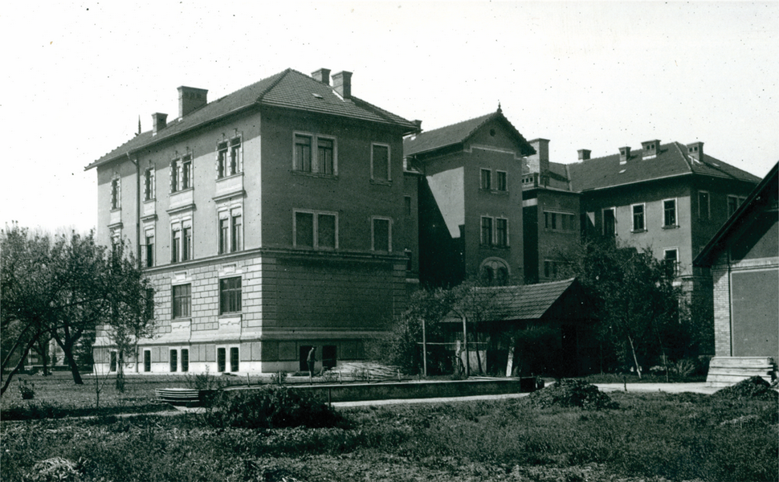
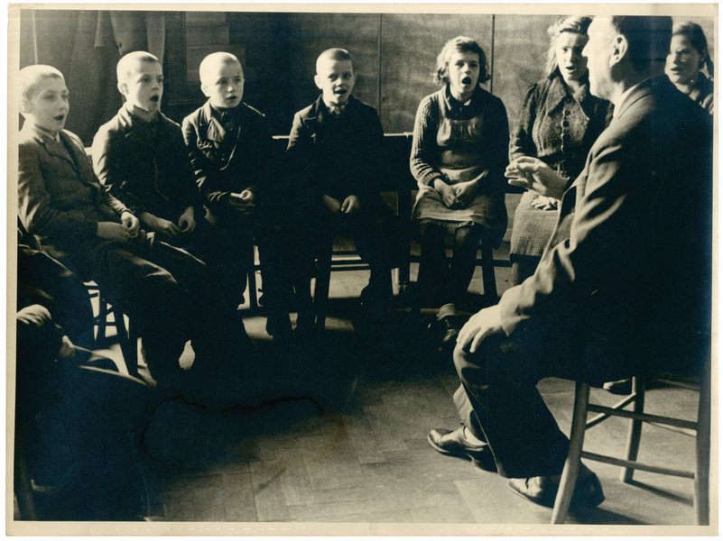
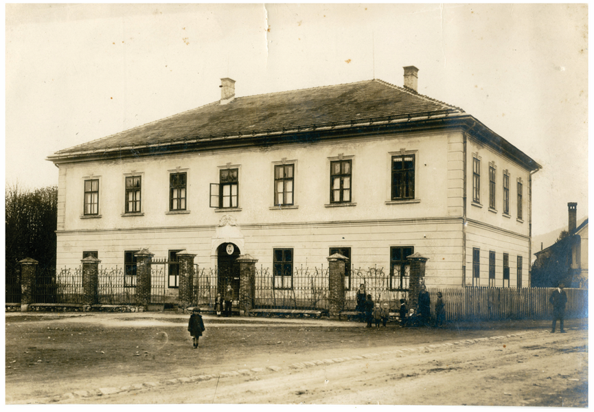
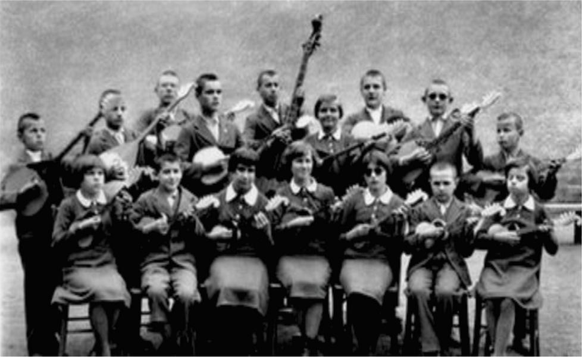
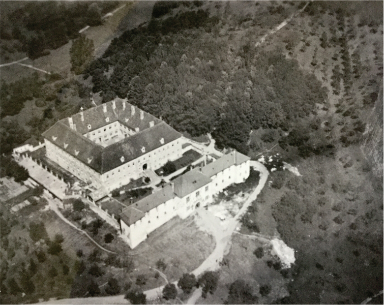
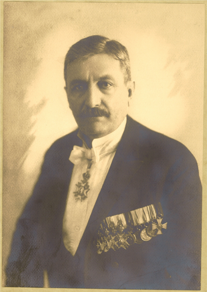
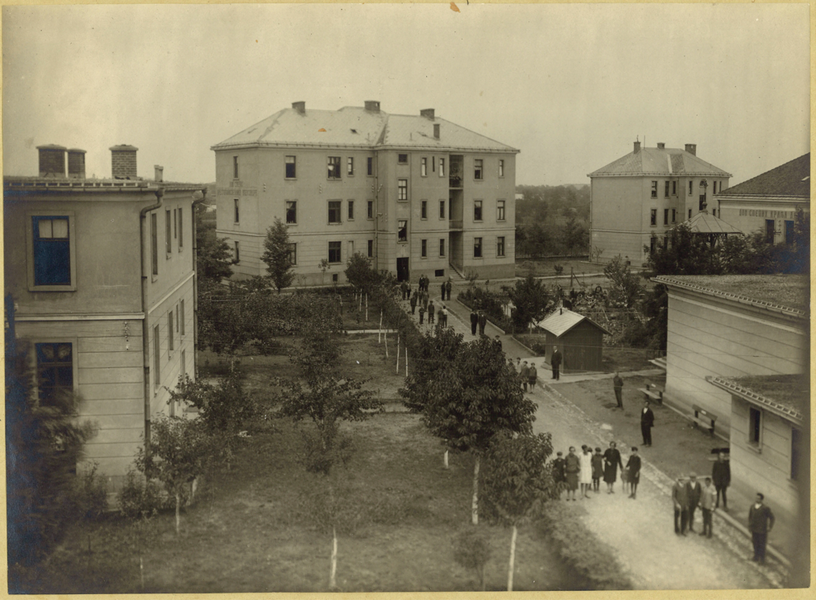
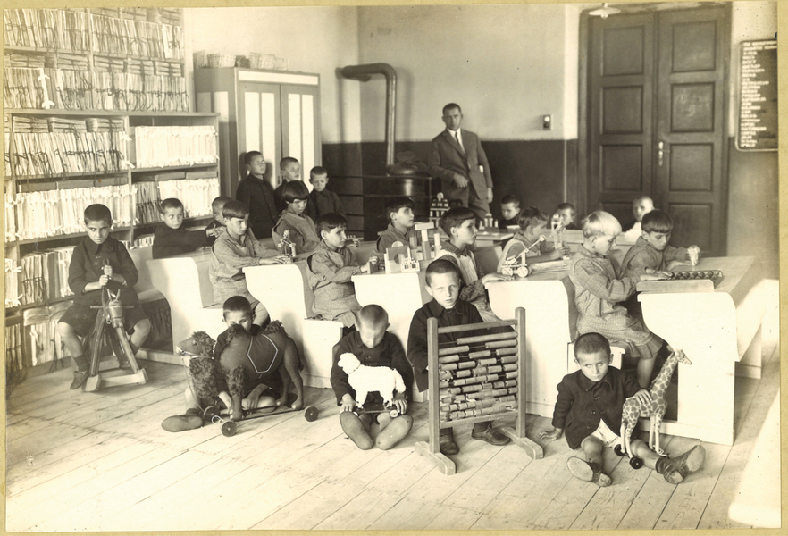
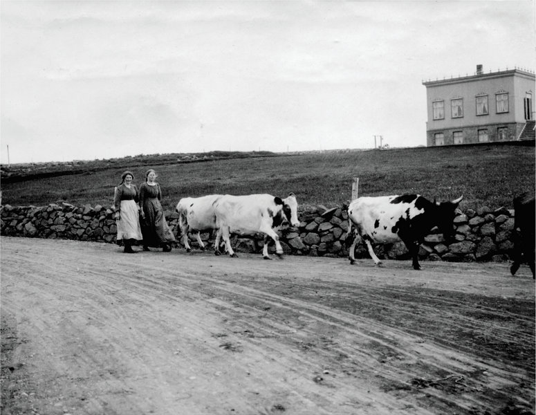
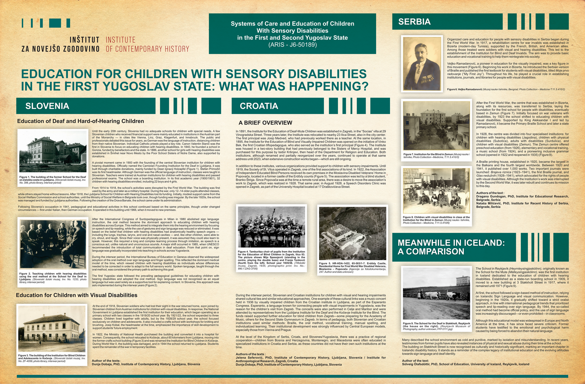

Dunja Dobaja
Jelena Seferović
Dragana Gundogan
Nataša Miličević
Sólveig Ólafsdóttir
Education of Deaf and Hard-of-Hearing Children
Until the early 20th century, Slovenia had no adequate schools for children with special needs. A few Slovenian children who received financial support were mainly educated in institutions in the Austrian part of the Monarchy — in cities like Vienna, Linz, Graz, Klagenfurt, and Innsbruck. The public and professionals debated this issue for years, as German was the language of instruction, distancing children from their native Slovenian. Individual Catholic priests played a key role. Canon Valentin Stanič was the first in Slovenia to focus on educating children with hearing disabilities. In 1840, he founded a school in Gorizia, funded by benefactors and the state. In 1886, another school for girls with hearing disabilities was established in Šmihel near Novo Mesto by the Poor School Sisters of Notre Dame, also supported by donations.

A pivotal moment came in 1900 with the founding of the central Slovenian institution for children with hearing disabilities. Officially named the Carniolan Founding Institution for the Deaf in Ljubljana, it was built through charitable donations, mainly funded by Dean Ignacij Holzapfel (Figure 1). Stefan Primožič was its first headmaster. Although German was the official language of instruction, classes were taught in Slovenian. Teachers were trained at Austrian institutions for children with hearing disabilities and passed professional exams. The school was a boarding institution. In its first academic year (1900/1901), 32 children with hearing disabilities enrolled, including 22 boys and 4 girls.
From 1914 to 1918, the school’s activities were disrupted by the First World War. The building was first used by the army and later as a military hospital. During the war, only 12-14 older pupils attended classes, while others stayed home without lessons. After 1918, the Ljubljana School for Children with Hearing Disabilities lost its funding. Initially, modest support came from the Social Welfare Commission and school authorities, until the Ministry of Social Welfare in Belgrade took over, though funding was irregular. By the late 1920s, the school was managed and funded by Ljubljana authorities. Following the creation ofthe Drava Banate, the school came under its administration.
Following Slovenia’s occupation in 1941, pedagogical and educational activities in this school continued based on the same principles, though under changed circumstances—first under Italian, then German occupation. It operated in this building until 1966, when it moved to new premises.

After the International Congress of Surdopedagogues in Milan in 1880 abolished sign language instruction, the oral method became the dominant approach to educating children with hearing disabilities across Europe. This method aimed to integrate them into the hearing environment by focusing on speech and lip-reading, while the use of gestures and sign language was reduced or eliminated. It was based on the belief that children with hearing disabilities had anatomically healthy speech organs — including the lungs, trachea, larynx, and oral and nasal cavities — and, like other children, were able to cry, shout, and laugh. Since their voice was physically present, it was assumed they could also learn to speak. However, this required a long and complex learning process through imitation, as speech is a conscious act, unlike natural and unconscious sounds. A major shift occurred in 1985, when UNESCO recommended the introduction of total communication in deaf education. From that point on, sign language was gradually incorporated into teaching in schools across Yugoslavia.
During the interwar period, the International Bureau of Education in Geneva observed the widespread adoption of the oral method over sign language and fingerspelling. This reflected the dominant medical model of the time, which viewed children with hearing disabilities as individuals whose differences needed to be corrected in order to adapt to the full sensory world. Spoken language, taught through the oral method, was considered the primary path to achieving this goal.
The first Yugoslav state followed the prevailing pedagogical guidelines for educating children with hearing disabilities and adopted the oral method. Sign language was not recognised as an equal language but was used solely as a supportive tool forexplaining content. In Slovenia, this approach was aslo implemented during the interwar years (Figure 2).
Education for Children with Visual Disabilities
At the end of 1918, Slovenian soldiers who had lost their sight in the war returned home, soon joined by Slovenian children from Austrian institutions for children with visual disabilities. In response, the National Government in Ljubljana established the first institution for their education, which began operating as a primary school with two classes in the 1919/20 school year. By 1921/22, the school expanded to three classes. Children lived together with adults, but by the 1928/29 school year, the school focused exclusively on children and adolescents. It also included a crafts school with workshops for knitting and brushing. Josip Kobal, the headmaster at the time, emphasized the importance of skill development to support students’ future employment.

In 1922, the Ministry of National Health purchased the building and converted it into a hospital for women. Consequently, the school relocated to Kočevje, about 60 kilometers from Ljubljana, moving into the former crafts school building (Figure 3) and was renamed the Institution for Blind Children in Kočevje. During World War II, the building was damaged, and in 1944 the school returned to Ljubljana. Students spent the remainder of the war in temporary facilities.
A Brief Overwiew
In 1891, the Institute for the Education of Deaf-Mute Children was established in Zagreb, in the “Socias” villa at 29 Vinogradska Street. Three years later, the Institute was relocated to nearby 23 llica Street, also in the city center. The first principal was Josip Medved, who had previously worked there as a teacher. At the same location, in 1895, the Institute for the Education of Blind and Visually Impaired Children was opened on the initiative of Vinko Bek, the first Croatian tiflopedagogue, who also served as the institution’s first principal (Figure 4). The Institute was housed in a two-story building that had previously belonged to the Sisters of Mercy Hospital, and was purchased for this purpose by Isidor Kršnjavi, then head of the Department for Religion and Education. Both institutions, although renamed and partially reorganized over the years, continued to operate at that same address until 2023, when extensive construction works began—which are still ongoing.
In addition to these institutes, various organizations provided support to children with sensory impairments. Until 1919, the Society of St. Vitus operated in Zagreb, one ofthe first associations of its kind. In 1922, the Association of Independent Educated Blind Persons received its own premises in the Moslavina Disabled Veterans’ Home in Popovača, located in a former castle ofthe Erdody counts (Figure 5). The association was led by a blind student, Branko Štriga. Since Popovača was at the time a remote rural area, there was a desire to move the association’s work to Zagreb, which was realized in 1928. That same year, in August 1928, a Speech Disorders Clinic was opened in Zagreb, as part ofthe University Hospital located at 17 Draškovičeva Street.


During the interwar period, Slovenian and Croatian institutions for children with visual and hearing impairments shared cultural ties and similar educational approaches. One example of these cultural links was a music concert held in 1936 by visually impaired children from the Croatian institute in Ljubljana, as part of the Esperanto Congress. Esperanto, a language known for connecting people with visual impairments in Yugoslavia, was the reason for the children’s visit from Zagreb. The concerts were also performed in Celje and Maribor and were attended by representatives from the Ljubljana Institute for the Deaf and the Kočevje Institute for the Blind. The funds raised supported further education for blind children from Zagreb—some preparing for the Academy of Music, others for the Second State Gymnasium in Zagreb. In terms of pedagogy, both Slovenian and Croatian institutions used similar methods: Braille, the oral method, vocational training, manual spelling, and individualized learning. Their institutional development was strongly influenced by Central European models, especially those from Vienna and Prague.
At the level of the Kingdom of Serbs, Croats, and Slovenes/Yugoslavia, there was a practice of regional cooperation—children from Bosnia and Herzegovina, Montenegro, and Macedonia were often educated in specialized institutions in Croatia and Serbia, as these countries did not have their own such institutions at the time.
Organized care and education for people with sensory disabilities in Serbia began during the First World War. In 1917, a rehabilitation centre for war invalids was established in Bizerta (modern-day Tunisia), supported by the French, British, and American allies. Among those treated were soldiers with visual and hearing disabilities. This led to the establishment of the Institution for Blind and Deaf Invalids. The aim was to provide basic education and vocational training to help them reintegrate into society.

Veljko Ramadanovič, a pioneer in education for the visually impaired, was a key figure in this movement (Figure 6). Beginning his work in Bizerta, he introduced the Serbian version of Braille and published the first textbook for students with visual disabilities, titled Moje prvo radovanje (“My First Joy”). Throughout his life, he played a crucial role in establishing institutions, journals, and libraries for people with visual disabilities.
After the First World War, the centre that was established in Bizerta, along with its resources, was transferred to Serbia, laying the foundation for the first school for people with disabilities, eventually based in Zemun (Figure 7). Initially focused on war veterans with disabilities, by 1923 the school shifted to educating children with visual disabilities. Supported by King Aleksandar I and led by Ramadanovič, it became the Primary Braille School and later a state primary school.

In 1928, the centre was divided into four specialised institutions: for children with hearing disabilities (Jagodina), children with physical disabilities (Subotica), adults with disabilities (Surdulica), and children with visual disabilities (Zemun). The Zemun centre offered preschool education (from 1926), elementary and vocational training, a music school (from 1924), and a pioneering inclusive grammar school (opened in 1922 and reopened in 1935) (Figure 8).

A Braille printing house, established in 1920, became the largest in the Balkans and the fourth largest worldwide. Between 1920 and 1941, it published over 1,000 works. Two important journals were launched: Brajeva riznica (1923-1941), the first Braille journal, and Glasnedužnih (1928-1941), which advocated for the rights of people with visual disabilities. Although the Institution’s work was interrupted by the Second World War, it was later rebuilt and continues its mission to this day.
The School in Reykjavik (Heyrnleysingjaskolinn), originally known as the School for the Mute (Malleysingjaskolinn), was the first institution in Iceland dedicated to the education of children with hearing disabilities. Established as a state-run boarding school in 1909, it moved to a new building at 3 Stakkholt Street in 1917, where it remained until 1971 (Figure 9).

At first, the school followed a sign-based method of instruction, relying on Icelandic Sign Language and visual communication. However, beginning in the 1920s, it gradually shifted toward a strict oralist approach, in line with international pedagogical trends that prioritized speech and lip-reading over sign language. By 1944, the so-called oral method had become official policy, and the use of sign language was increasingly discouraged—or even prohibited—in classrooms.
Although this educational model was widespread in Europe and North America at the time, it has since faced severe criticism. Former students have testified to the emotional and psychological harm caused by being forced to abandon their natural language.
Many described the school environment as cold and punitive, marked by isolation and misunderstanding. In recent years, testimonies from former pupils have also revealed instances of physical and sexual abuse during their time at the school. The building on Stakkholt Street is now recognised as culturally and historically significant, marking an important chapter in Icelandic disability history. It stands as a reminder of the complex legacy of institutional education and the evolving attitudes towards sign language and deaf identity.
